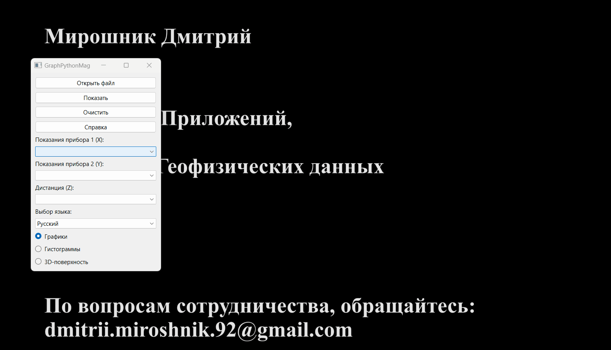
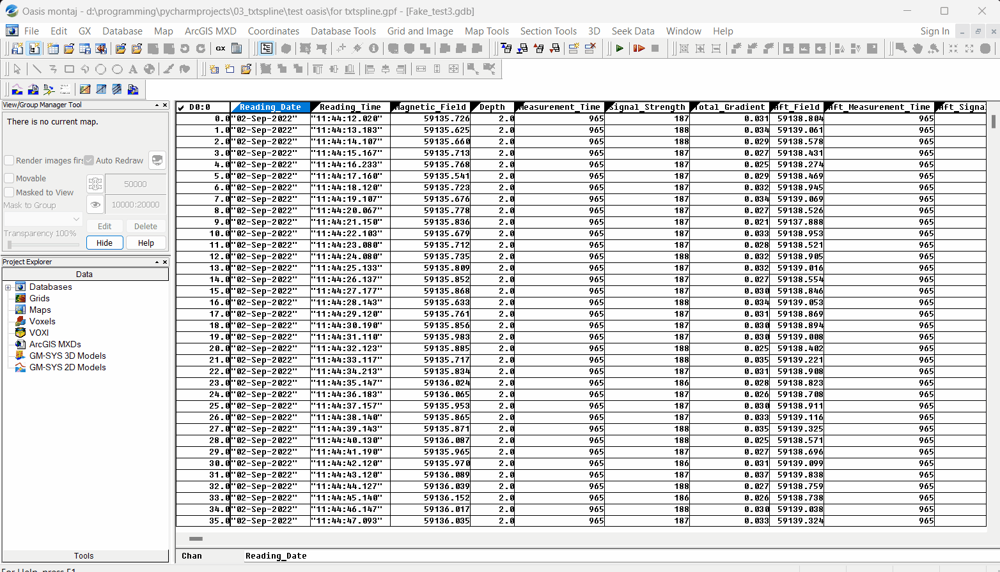

Это приложение для отображения различных геофизических данных.
В нем реализована возможность создания графиков, гистограмм и зd-поверхностей с типографическим качеством.
В качестве входных данных могут служить любые числовые данные в табличном виде, и сохраненные в файле с расширением 'CSV'.
Интерфейс программы
Нажмите кнопку "Открыть", чтобы найти и открыть исходный CSV-файл.
Используйте выпадающее меню для выбора соответствующих данных.
Для очистки данных, нажмите кнопку "Очистить".
Для выполнения графических построений, нажмите кнопку "Показать".
Чтобы сменить язык интерфейса, выберите один из доступных языков в выпадающем меню "Выбор языка".
При возникновении вопросов, вы можете обратиться за помощью, нажав кнопку "Справка".
Графики
Для построения простых графиков используется научная библиотека Matplotlib.
В данной программе реализованы следующие варианты графиков:
Простой график. Для построения простого графика, выберите значения любой одной из двух колонок:
"Показания прибора 1" или "Показания прибора 2".
Комбинированный график. Для сравнения показаний двух приборов, выберите значения для двух колонок:
"Показания прибора 1" и "Показания прибора 2".

График зависимости от дистанции. Вы также можете комбинировать различные варианты графиков в зависимости от дистанции.
Для этого, выберите значение канала дистанции из выпадающего меню "Дистанция".
Гистограммы
Для построения гистограмм нормального распределения, используется надстройка для Matplotlib - библиотека Seaborn.
В данной программе реализованы несколько вариантов отображения нормального распределения:
Простая гистограмма, совмещенная с графиком нормального распределения.
Для построения, выберите значения любой одной из двух колонок:
"Показания прибора 1" или "Показания прибора 2".
Комбинированные гистограммы. Для сравнения показаний, выберите значения для двух колонок:
"Показания прибора 1" и "Показания прибора 2".
Распределение значений в зависимости от дистанции. Вы также можете комбинировать различные варианты отображения в зависимости от дистанции.
Для этого, выберите значение канала дистанции из выпадающего меню "Дистанция".
Работа с окном Matplotlib
Окно отображения научной графики - Matplotlib, позволяет пользователю выполнять различные действия, такие как:
Перетаскивание графика;
Масштабирование;
Отображение области построения;
Изменение подписей к осям;
Изменение цвета;
Сохранение графика в выбранном формате и т.д.
3d-Поверхность
Для построения 3d-Поверхности, используется библиотека Plotly.
Для построения поверхности выберите все 3 колонки: X, Y и Z. !!!Все координаты должны быть в прямоугольной системе!!!
Работа с окном 3d-Поверхности
Окно отображения 3d-Поверхности, позволяет пользователю выполнять различные действия, такие как:
Перетаскивание;
Масштабирование;
Вращение;
Считывание данных;
Сохранение изображения выбранном формате и т.д.
Интеграция с OasisMontaj
Данное приложение позволяет работать с любым CSV-файлом. Но т.к. эта программа была создана по заказу АО "Южморгеология",
для работы с базами данных OasisMontaj, разберем порядок экспорта базы данных в CSV-файл.
Порядок действий в среде OasisMontaj:
Database / Export / CSV etc...;
Выбираем параметры сохранения;
Жмем "Ok".

Обратная связь
GraphPythonMag v 1.2.1
Автор: Мирошник Дмитрий
Разработка приложений
Веб-дизайн
Обработка геофизических данных
По вопросам сотрудничества: dmitrii.miroshnik.92@gmail.com.
Также вы можете поблагодарить Автора.
Буду рад поддержке и обратной связи!